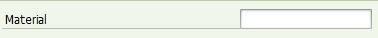
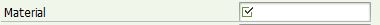
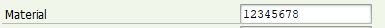
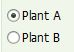
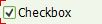
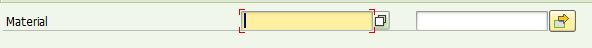

ABAP also known as Advanced Business Application Programming is the primary language to code on SAP NetWeaver ABAP application server platform.
There are numerous Selection Screen Event, some are optional in program depending on the requirement. Below is the list of events
Initialization is an event block for initializing an executable program. The associated event is triggered by the ABAP runtime enviroment during the flow of an executable program, directly after LOAD-OF-PROGRAM and before the selection screen processing of any existing standard selection screen. This enables the input fields of the selection screen to be initialized once-only, including those fields defined in the logical database associated with the program.
At Selection-Screen event occurs immediately before sending a selection screen and after certain user actions on a displayed selection, hence, it will triggered at least twice for actions on selection screens included as a subscreen on another selection-screen.
At Selection Screen Output is triggered by dynpro event "process before output (PBO)" of a selection screen. In the event block, the selection screen can be prepared using assignments to the data objects of parameters and selection criteria and using dynamic screen modifications.
At Selection Screen On is triggered by the dynpro event "process after input (PAI)" of a selection screen if the content of the input field of a parameter was passed to ABAP program. The user input can be checked in this event block. For example, an invalid material number is entered, an error message is displayed to the user.
*-----------------*
* SELECTION SCREEN
*-----------------*
PARAMETERS: p_matnr TYPE mara-matnr.
*-----------------------*
* AT SELECTION-SCREEN On
*-----------------------*
AT SELECTION-SCREEN ON p_matnr.
SELECT * FROM mara
INTO TABLE gt_mara
WHERE matnr EQ p_matnr.
IF sy-subrc NE 0.
MESSAGE e002(/kyk/ops).
ENDIF.
The code above displayed how to validate an user's input on the variable p_matnr and throw an error message if the material is invalid. The code above may seem difficult to understand for now, hence, we just need to know right now is that the validation can be done in the "At Selection-Screen On".
At Selection Screen On Block is triggered by the dynpro event Process After Input "PAI" of a selection screen if all the input fields of a block <block> of the selection screen were passed to the ABAP program. Like the "At Selection-Screen On", this event is used to validate the customized block created.
To create a mandatory input, copy the code below.
*-----------------*
* SELECTION SCREEN
*-----------------*
SELECTION-SCREEN BEGIN OF BLOCK bk1.
PARAMETERS: p_matnr TYPE mara-matnr.
SELECT-OPTIONS: s_matnr FOR mara-matnr NO INTERVALS.
SELECTION-SCREEN END OF BLOCK bk1.
*-----------------------*
* AT SELECTION-SCREEN On
*-----------------------*
AT SELECTION-SCREEN ON BLOCK bk1.
IF p_matnr IS INITIAL AND s_matnr[] IS INITIAL.
MESSAGE e002(/kyk/ops).
ENDIF.
The two event On Help-Request and On Value-Request are triggered by the dynpro events Process On Help Request (POH, F1 Key) and Process On Value Request (POV, F4 key). In the event blocks, a self-defined field or input field can be programmed, which overrides any helps defined in ABAP Dictionary
To create the value request, copy the code below.
*&-----------------*
*& SELECTION SCREEN
*&-----------------*
PARAMETERS: p_matnr TYPE mara-matnr.
*&--------------------*
*& AT SELECTION-SCREEN
*&--------------------*
AT SELECTION-SCREEN ON HELP-REQUEST FOR p_matnr.
CALL FUNCTION 'DSYS_SHOW_FOR_F1HELP'
EXPORTING
* APPLICATION = 'SO70'
dokclass = 'TX'
doklangu = sy-langu
dokname = 'ZMATNR'
* DOKTITLE = ' '
* HOMETEXT = ' '
* OUTLINE = ' '
* VIEWNAME = 'STANDARD'
* Z_ORIGINAL_OUTLINE = ' '
* CALLED_FROM_SO70 = ' '
* SHORT_TEXT = ' '
* APPENDIX = ' '
* IMPORTING
* APPL =
* PF03 =
* PF15 =
* PF12 =
EXCEPTIONS
class_unknown = 1
object_not_found = 2
OTHERS = 3.
IF sy-subrc <> 0.
* Implement suitable error handling here
ENDIF.
The two event On Help-Request and On Value-Request are triggered by the dynpro events Process On Help Request (POH, F1 Key) and Process On Value Request (POV, F4 key).
To create the value request, copy the code below.
*&-----------------*
*& SELECTION SCREEN
*&-----------------*
PARAMETERS: p_file LIKE rlgrap-filename.
*&--------------------*
*& AT SELECTION-SCREEN
*&--------------------*
AT SELECTION-SCREEN ON VALUE-REQUEST FOR p_file.
CALL FUNCTION 'F4_FILENAME'
* EXPORTING
* PROGRAM_NAME = SYST-CPROG
* DYNPRO_NUMBER = SYST-DYNNR
* FIELD_NAME = ' '
IMPORTING
file_name = p_ulfile.
The event is triggered as the alst event of the selection screen processing if all the input values were passed to the program. All user input can be checked in this event block. Sending a warning or an error message in the event block makes all the screen fields ready for input once again.
To create the value request, copy the code below.
*&-----------------*
*& SELECTION SCREEN
*&-----------------*
SELECTION-SCREEN BEGIN OF BLOCK bk2 WITH FRAME TITLE text002.
PARAMETERS: r_but1 RADIOBUTTON GROUP rg1,
r_but2 RADIOBUTTON GROUP rg1.
SELECTION-SCREEN END OF BLOCK bk2.
*&--------------------*
*& AT SELECTION-SCREEN
*&--------------------*
AT SELECTION-SCREEN OUTPUT.
text002 = 'Radiobutton Block'.
AT SELECTION-SCREEN ON RADIOBUTTON GROUP rg1.
IF r_but1 EQ abap_true.
"Do something when first radiobutton is selected
ELSEIF r_but2 EQ abap_true.
"Do something when second radiobutton is selected
ENDIF.
Refer to Radiobutton Input for more details on radiobutton.
Selection Screen is where user entered their inputs for generating reports/programs.
To create a text input, for instance for entering Material Number.
To create a text input, copy the code below.
PARAMETERS: p_matnr TYPE mara-matnr.
The above code means that the variable "p_matnr" has a data type identical to "mara-matnr". Next, koders needs to change the variable name from "p_matnr" to a more intelligible name for user.
Proceed to SAP standard toolbar, navigate through the path "GOTO" > "Text Elements" > "Selection Texts" Under the "Selection Texts" tab, koder will be able to find the variable created.
To rename the variable, koder may
1) manually insert it under the text column or
2) select the checkbox if koder wants to follow the same name as the data-type assigned.
Inputs can have special effects to make it more interactive, refer to the below example for special effect.
Mandatory input can be assigned using the code "Mandatory".
As shown in the image below, mandatory field will display a box with a tick.
To create a mandatory input, copy the code below.
PARAMETERS: p_matnr TYPE mara-matnr OBLIGATORY.
Initial value can be assign to input using the code "DEFAULT".
Assigning initial value can help the user to save time and effort. As shown in the text input below, an initial value "12345678" has been assigned to the input.
To create an input with initial value, copy the code below
PARAMETERS: p_matnr TYPE mara-matnr DEFAULT '12345678'.
An input can be hidden in a few different ways. The easiest way is to insert the code "NO-DISPLAY". This hide the input from user screen, but the input is still "valid" in the coding lines.
To hide an input, copy the code below.
PARAMETERS: p_matnr TYPE mara-matnr NO-DISPLAY.
Alternatively, you can also hide the input with another input such as radiobutton or checkbox. Refer to the Radiobutton or Checkbox section on how to hide input based on user selection.
Radiobutton is an input for user to be able to select from a list of options. Radiobutton can be used as an interactive input. For instance, it can be used to change the selection-screen visible inputs depends on which radiobutton is selected.
To create a radiobutton, copy the code below
PARAMETERS: r_werks1 RADIOBUTTON GROUP rg1 DEFAULT 'X',
r_werks2 RADIOBUTTON GROUP rg1.
To make a radiobutton more interactive, follow an example below, when "Plant A" is selected, a text input shall appear, and when "Plant B" is selected, a select-option shall appear.
To create an interactive radiobutton, copy the code below
*-----------------*
* SELECTION SCREEN
*-----------------*
PARAMETERS: r_werks1 RADIOBUTTON GROUP rg1 DEFAULT 'X' USER-COMMAND rg1,
r_werks2 RADIOBUTTON GROUP rg1.
PARAMETERS: p_matnr TYPE mara-matnr MODIF ID pla.
SELECT-OPTIONS: s_matnr FOR mara-matnr MODIF ID plb.
*---------------------------*
* AT SELECTION-SCREEN OUTPUT
*---------------------------*
AT SELECTION-SCREEN OUTPUT.
LOOP AT SCREEN.
IF r_werks1 EQ 'X'.
IF screen-group1 EQ 'PLA'.
screen-active = '1'.
ELSEIF screen-group1 EQ 'PLB'.
screen-active = '0'.
ENDIF.
ELSE.
IF screen-group1 EQ 'PLA'.
screen-active = '0'.
ELSEIF screen-group1 EQ 'PLB'.
screen-active = '1'.
ENDIF.
ENDIF.
MODIFY SCREEN.
ENDLOOP.
The above code shall hide or display the Parameter (P_MATNR) and Select-Option (S_MATNR) depends on the radiobutton selected.
Checkbox is a small box which user can select. When checkbox is selected, it will have the value of 'X'.
To create checkbox, copy the code below
PARAMETERS: x_check AS CHECKBOX.
To make checkbox more interactive like the radiobutton, follow the example below. When checkbox is checked, the select-option named "Material" shall disappear and visible only when checkbox is unchecked.
To create the example above, copy the code below
*-----------------*
* SELECTION SCREEN
*-----------------*
PARAMETERS: x_check AS CHECKBOX USER-COMMAND ckb.
SELECT-OPTIONS: s_matnr FOR mara-matnr MODIF ID plb.
*---------------------------*
* AT SELECTION-SCREEN OUTPUT
*---------------------------*
AT SELECTION-SCREEN OUTPUT.
LOOP AT SCREEN.
IF x_check EQ abap_true.
IF screen-group1 EQ 'PLB'.
screen-active = '0'.
MODIFY SCREEN.
ENDIF.
ELSE.
IF screen-group1 EQ 'PLB'.
screen-active = '1'.
MODIFY SCREEN.
ENDIF.
ENDIF.
ENDLOOP.
Select-option can be consider as internal table for text input.
To create select-options. copy the code below
SELECT-OPTIONS: s_matnr FOR mara-matnr.
The above code means that the variable "s_matnr" follow a data type from "mara-matnr". The advantage for Select-Option over Parameter is as follow
Select-option can be customized depends on koders design such as removing the inteval from the select-option or the extension etc.
SELECT-OPTIONS: s_matnr FOR mara-matnr.
SELECT-OPTIONS: s_matnr FOR mara-matnr NO-EXTENSION.
SELECT-OPTIONS: s_matnr FOR mara-matnr NO INTERVALS
Below show an example of how you can read database using select-option
*----------------------------*
* Internal Table Declarations
*----------------------------*
DATA: gt_mara TYPE STANDARD TABLE OF mara.
*-----------------*
* SELECTION SCREEN
*-----------------*
SELECT-OPTIONS: s_matnr FOR mara-matnr.
*-------------------*
* START-OF-SELECTION
*-------------------*
START-OF-SELECTION.
SELECT * FROM mara
INTO TABLE gt_mara
WHERE matnr IN s_matnr.
*----------------------------*
* Internal Table Declarations
*----------------------------*
DATA: gt_mara TYPE STANDARD TABLE OF mara.
*-----------------*
* SELECTION SCREEN
*-----------------*
SELECT-OPTIONS: s_matnr FOR mara-matnr.
*-------------------*
* START-OF-SELECTION
*-------------------*
START-OF-SELECTION.
SELECT * FROM mara
INTO TABLE gt_mara
WHERE matnr EQ s_matnr-low.